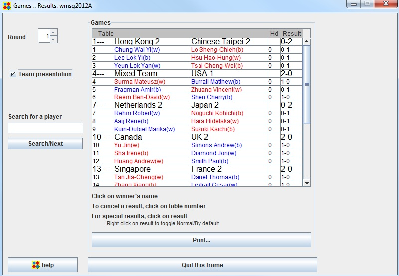

Games Results frame

To enter usual results, just click on the winner.
The winner is coloured in red, the loser in blue, an equal result in purple.
For special results, repeatedly click inside the specific result, until the desired result appears.
The list of possible results is given in Games Encoding
Games Results for Team Tournaments
Select the "Team presentation" checkbox : The presentation will be displayed, match by match
